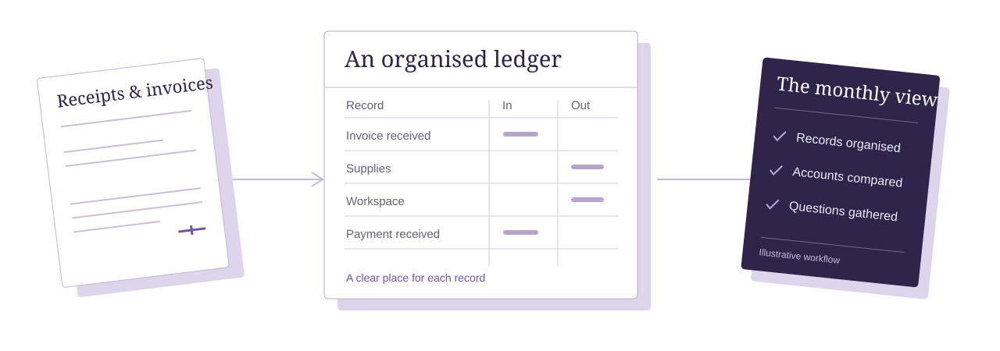

Your business deserves
a clearer ledger.
Bookkeeping support for the transactions, documents and month-end questions that fill your day.
Find your starting point
Transactions
Recorded with context
Reconciliation
Records checked together
Monthly reporting
The detail, made readable
What would you
like off your desk?
Start with the tasks, rather than a package name. Choose a few areas below to shape a sample scope for your first conversation.
Two ways to begin
Illustrative service arrangements. Actual coverage, price and availability must be agreed with the business.
| The starting point | Ongoing support | A catch-up project |
|---|---|---|
| A good fit when | You want a repeatable monthly routine. | An agreed period needs bringing up to date. |
| The work | Regular recording, reconciliation and agreed summaries. | Review the backlog and define a bounded task list. |
| Before starting | Confirm volume, accounts, software access and responsibilities. | Confirm record completeness, the period and any gaps. |
| How it is priced | A tailored fee after the scope is reviewed. | A project quote after the records are reviewed. |
A sensible handover.
Then a steady rhythm.
Good support depends on a clear exchange of information. Here’s a practical way to start.
Gather the picture
Outline your business, the accounts involved and the records you already keep. No sensitive documents are needed for an initial enquiry.
Agree the scope
Confirm what will be handled, what stays with you, the fee and a secure way to share records before any work begins.
Keep the loop open
Set a review routine so missing information and questions have a clear place to go.
A few things to clear up.
Plain answers before the paperwork.
Is this an accountancy or tax-advice service?
This demonstration describes bookkeeping tasks only. Tax filing, regulated accountancy, legal advice, investment advice and other professional services are not included. Ask your actual provider about their credentials and scope.
Can you work with the software I already use?
The business using this template should list its genuine software support. In an initial enquiry, name your current system without sharing passwords or account access. Compatibility and access are agreed directly before work starts.
What if my records need catching up?
Choose catch-up bookkeeping and mention the period you want reviewed. A real provider would need to assess the records, any missing information and the work involved before confirming a quote or timeline.
Should I attach statements or invoices here?
No. This demo has no upload or secure document exchange. Keep bank details, tax identifiers, payroll records, account credentials and client information out of the form. Use only an agreed secure channel with your real provider.
Does the enquiry go to a real business?
No. The tool creates an unsent draft on this page. You can review and copy it, but nothing is emailed, submitted, booked or stored on a server.
Start with
what you need.
A few practical details are enough to prepare the first conversation.
This is an unsent draft tool. Nothing is submitted or stored.
A draft for your conversation.
Review it before you copy. It has not been sent.